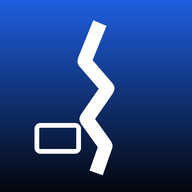
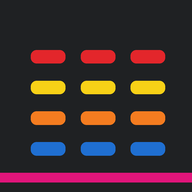
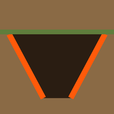
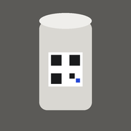

Crack Watch
Track foundation and wall cracks from the same spot and angle every time, measured in real millimetres.
Drain Keeper
Drainage inventory for HOAs and small towns: photo points, storm routes and board reports.

DigClear
Locate tickets for small contractors: dig windows, positive response and stamped photo proof of every mark.

Trench Check
Plan trench slopes for your soil, check a cut with your phone and keep a signed daily inspection log.

Cylinder Chain
Concrete QA from truck to press: scannable cylinder labels, break schedule and ACI acceptance.
Install on your phone
- Open an app above in Chrome on Android or Safari on iPhone.
- Android: tap the menu, then Install app. iPhone: tap Share, then Add to Home Screen.
- Allow the camera, location and motion prompts the first time you use the camera.